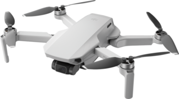
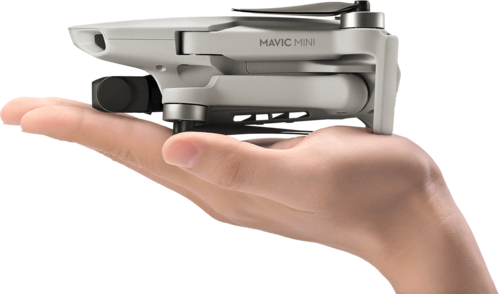

I've always been fascinated by RC cars, boats, helicopters and drones from an ever younger age. Then I discovered a real passion for hobby drones, receiving my first drone at the age of 12. I had several small, low-cost drones to learn with. They were simple drones, with no GPS support or video feedback. They were equipped with a camera to take photos and videos, but the quality was limited to 720p. Their battery life was also limited to a few minutes (around 7 minutes).
After that, having acquired enough experience, I bought my first "real" drone from DJI. DJI is a Chinese company, world leader in the manufacture of hobby, professional and corporate drones, founded in 2006 by Frank Wang. Learn more.
The Mavic Mini is a small drone with a weight of just 249 grams. Its weight is a great advantage when it comes to regulations. It can be folded for easy transport. The drone's small size means it can resist winds of up to 28 km/h.
The Mavic Mini is also equipped with a camera capable of shooting 12 MP photos and videos up to 2.7K at 25 or 30 frames per second. The camera is installed on a 3-axis stabilized nacelle to ensure stable videos even in stormy weather! Wifi transmission is claimed to be 2000 meters. However, distance is limited to around 400 meters. The application (DJI Fly), available by connecting your phone or tablet to the remote control, provides video feedback from the drone, and lots of other information, such as altitude, number of satellites, flight time...
I've had this drone for over 3 years now, and I take it with me on vacations and walks when the regulations allow. I've taken just over 200 photos and videos of different places in France.